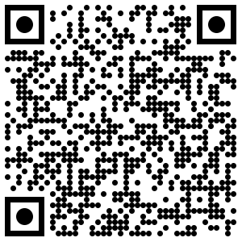

Wer hat Zugang zu KI, und wann entsteht ein unfairer Vorteil?
Werte und Normen | Klasse 10
Künstliche Intelligenz in der Schule
Chance oder Gefahr? Eine problemorientierte Einheit zur Entwicklung eines gemeinsamen KI-Verhaltenskodexes.
2 x 90 Minuten
Gruppenpuzzle
Urteilsbildung
Handlungsprodukt: Kodex
Einstieg
Verhaltensampel: Wann ist KI-Nutzung vertretbar?
Scannt den QR-Code und ordnet erste Beispiele spontan ein. Die Ampel zeigt, welche Nutzung ihr begründen könnt und wo ihr Grenzen seht.
G
Grün: vertretbar
KI hilft beim Lernen, ohne die eigene Leistung zu ersetzen.
!
Gelb: nur mit Bedingungen
KI darf unterstützen, muss aber offengelegt, geprüft oder begrenzt werden.
R
Rot: nicht vertretbar
KI verschleiert Eigenleistung, erzeugt Täuschung oder gibt ungeprüfte Inhalte ab.

Brainstorming öffnenErste Einschätzung: Was ist gerecht, was braucht Regeln, was geht zu weit?
Leitfrage
Worum ringen wir?
Wie kann KI in der Schule genutzt werden, ohne dass Fairness, Eigenleistung und Verantwortung verloren gehen?
Wo liegt die Grenze zwischen sinnvoller Hilfe und Täuschung?
Wer haftet moralisch für Fehler, Verzerrungen oder Falschinformationen?
Was soll Schule prüfen, wenn KI Texte, Bilder und Präsentationen erstellen kann?
Einstieg
Ein KI-Ergebnis ist noch kein Urteil
Eine KI kann schnell formulieren, sortieren und Vorschläge machen. Entscheidend bleibt, ob Menschen prüfen, begründen und Verantwortung übernehmen.
Zeigt ein KI-Beispiel: gelungene Zusammenfassung, falsche Quelle oder überzeugend klingende Fehlinformation.
Was wäre daran hilfreich? Was wäre problematisch, wenn es ungeprüft abgegeben wird?
Ablauf
Vom Problem zum gemeinsamen Kodex
-
1
Gruppenrecherche Jede Gruppe bearbeitet einen Teilaspekt und entwickelt eine begründete Position.
-
2
Präsentationen Die Gruppen stellen Erkenntnisse, Bewertung und Empfehlungen in maximal 8 Minuten vor.
-
3
KI-Verhaltenskodex Die Klasse einigt sich auf 8 bis 10 Regeln für den Einsatz von KI in der Schule.
Gruppenpuzzle
Fünf Perspektiven auf dieselbe Streitfrage
Welche KI-Nutzung würdet ihr selbst grün, gelb oder rot markieren?
Wann würdet ihr einer KI-Antwort vertrauen und wann nicht?
Wann wäre eine Note trotz KI-Nutzung aus eurer Sicht gerecht?
Welche Aufgaben zeigen, was ihr wirklich selbst könnt?
Wann hilft KI euch beim Lernen, wann macht sie abhängig?
Recherche
Mögliche Quellen für eure Ampel
Nutzt passende Quellen, um eure Ampel-Einordnung zu prüfen: Was ist erlaubt, was ist fair, was muss offengelegt werden?
Bildungsportal Niedersachsen
Textgenerierende KI-Systeme im schulischen Kontext.
Landesbezug und Schule Datenschutz NiedersachsenOrientierungshilfen zu KI, Verantwortung und Datenschutz.
Daten und Risiken Niedersachsen: KI im UnterrichtInformationen zum Schul-Chatbot AIS.chat und KI als Unterrichtsthema.
Regeln und Praxis NRW: Textgenerierende KIChancen, Risiken und transparente Nutzung im Vergleich.
Transparenz Hessen: KI in Schule und UnterrichtHandreichung mit Praxisbezug, Ethik und Datenschutz.
Beispiele und Orientierung NDR: KI-Betrug an SchulenAnlasstext zu Fairness, Täuschung und Kontrolle.
DiskussionsanlassGruppe 1
Fairness und Eigenleistung
Fragestellung
Welche KI-Nutzung würdet ihr im Schulalltag als fair, fragwürdig oder unfair einordnen?
Ergebnis
Erstellt eine Schüler-Ampel zur Fairness mit eigenen Beispielen und 2 bis 3 Empfehlungen.
- Geht von euren eigenen Erfahrungen mit Hausaufgaben, Referaten, Facharbeiten oder Lernaufgaben aus.
- Wählt Situationen aus, bei denen ihr in der Ampel unsicher wart oder verschiedener Meinung seid.
- Ordnet sie neu ein: Was ist für euch grün, gelb oder rot?
- Begründet, woran man echte Eigenleistung noch erkennt.
Gruppe 2
Verantwortung und Wahrheit
Fragestellung
Wann könnt ihr KI-Antworten verantwortbar nutzen und wann müsst ihr misstrauisch werden?
Ergebnis
Erstellt eine Schüler-Ampel zum Prüfen von KI-Antworten mit 2 bis 3 Empfehlungen.
- Sammelt Situationen, in denen ihr KI nach Erklärungen, Fakten, Quellen oder Formulierungen fragen würdet.
- Prüft, wann ihr das Ergebnis übernehmen, überprüfen oder verwerfen müsstet.
- Ordnet eure Situationen in grün, gelb oder rot ein.
- Begründet, welche Verantwortung bei euch bleibt.
Gruppe 3
Bewertung von Leistungen
Fragestellung
Wann wäre eine bewertete Arbeit trotz KI-Nutzung aus eurer Sicht noch gerecht bewertet?
Ergebnis
Erstellt eine Schüler-Ampel für bewertete Aufgaben mit 2 bis 3 Empfehlungen.
- Sammelt Situationen, in denen KI bei benoteten Aufgaben helfen könnte.
- Diskutiert: Wäre es für euch fair, wenn andere KI so nutzen?
- Ordnet ein, welche Nutzung grün, gelb oder rot ist.
- Entscheidet, was Schülerinnen und Schüler offenlegen müssten.
Gruppe 4
Neue Prüfungsformen
Fragestellung
Bei welchen Aufgaben könnt ihr zeigen, was ihr wirklich verstanden habt?
Ergebnis
Erstellt eine Schüler-Ampel für Aufgaben und Prüfungen mit 2 bis 3 Empfehlungen.
- Sammelt Aufgabenformate, die ihr aus dem Unterricht kennt oder euch wünschen würdet.
- Überlegt, bei welchen Aufgaben KI kaum hilft, sinnvoll hilft oder zu viel übernimmt.
- Ordnet die Aufgabenformen in grün, gelb oder rot ein.
- Begründet, wodurch eure eigene Leistung sichtbar wird.
Gruppe 5
Gesellschaftliche Folgen
Fragestellung
Wann hilft KI euch wirklich beim Lernen und wann nimmt sie euch Lernen ab?
Ergebnis
Erstellt eine Schüler-Ampel zu Chancen und Risiken mit 2 bis 3 Empfehlungen.
- Sammelt Erfahrungen aus Schule, Alltag, Social Media, Hobbys oder Berufsvorstellungen.
- Unterscheidet: Wann macht KI euch selbstständiger, wann eher abhängiger?
- Ordnet eure Beispiele in grün, gelb oder rot ein.
- Begründet, was für euch gerechter und verantwortlicher Umgang wäre.
Präsentation
Maximal 8 Minuten pro Gruppe
Visualisiert eure Ergebnisse auf einer Präsentationsfolie, einem digitalen Whiteboard oder einem Plakat.
Worum ging es in eurer Gruppe genau?
Welche Situationen aus Schule oder Alltag habt ihr gesammelt?
Was ist grün, gelb oder rot und wie begründet ihr das?
Welche Regeln sollte die Schule daraus ableiten?
Normative Kernfrage
Aus Medienkunde wird Werte und Normen
Welche Regel sollte an unserer Schule gelten und warum ist sie gerecht?
Entscheidend ist nicht nur, was KI technisch kann, sondern welche Nutzung wir aus Gründen der Fairness, Verantwortung und Bildung für vertretbar halten.
Abschlussauftrag
KI-Verhaltenskodex für die Schule
Die Klasse einigt sich auf 8 bis 10 Regeln. Nutzt eure Ampel-Ergebnisse als Grundlage.
Welche KI-Nutzung ist aus eurer Sicht vertretbar und sinnvoll?
Welche KI-Nutzung ist nur unter bestimmten Bedingungen vertretbar?
Welche KI-Nutzung ist nicht vertretbar?
Welche Werte begründen eure Regeln?
Was muss gesagt oder dokumentiert werden?
Zeitplanung
1. Doppelstunde
10 Min
Einstieg
KI-Beispiel zeigen und erste Problemfragen sammeln.
10 Min
Gruppenfindung
Themen verteilen, Rollen klären und Arbeitsziel sichern.
45 Min
Recherche
Schwerpunkt untersuchen und eine begründete Position entwickeln.
25 Min
Präsentation vorbereiten
Erkenntnisse verdichten, Empfehlung formulieren, Visualisierung erstellen.
Zeitplanung
2. Doppelstunde
40-50 Min
Präsentationen
5 Gruppen präsentieren jeweils maximal 8 Minuten.
20 Min
Diskussion
Empfehlungen vergleichen, Konflikte markieren, Prioritäten setzen.
15 Min
Kodex entwickeln
8 bis 10 gemeinsame Regeln formulieren.
10 Min
Abstimmung
Regeln prüfen, schärfen und beschließen.
5 Min
Reflexion
Was bleibt für den eigenen Umgang mit KI wichtig?